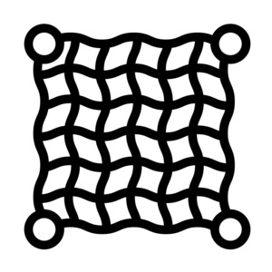

ϣⲛⲉ SAA2B, -ⲏ SBF, pl ϣⲛⲏⲩ, -ⲩⲉ S, -ⲏⲟⲩ AB & sg as pl, nn m, net: Job 18 8 S -ⲏ B, Lam 1 13 BF, Ez 12 13 S (B ⲥⲁⲅⲏⲓⲛⲓ), Hos 7 12 AB δίκτυον; Ps 140 10 SB -ⲏ ἀμφίβληστρον, Mk 1 16 S ϩⲓ ϣ. B ϣ. ⲛⲥⲓϯ ἀμφιβάλλειν, Is 19 8 S ⲉⲧⲛⲉϫ ϣⲛⲏ B ϩⲓ ϫⲉⲗⲓ ἀμφιβολεύς; PMich 1191 S ⲧⲁⲃⲱ ⲡⲟⲣⲉϣ ⲉⲃⲟⲗ ⲉⲩⲣⲱϩⲧ ⲙⲡⲉϣⲛⲏ, Gu 98 S ϣⲛⲏ ϩⲓⲁⲃⲱ, Mus 45 52 B ⲥⲱⲕ ⲙⲡⲓϣ. ⲉⲡⲓⲭⲣⲟ, Mani 2 A2 ⲡⲉ[ϥ]ϣ. ⲉⲧϥϭⲱⲣϭ ⲁⲙⲯⲩⲭⲁⲩⲉ ⲛϩⲏⲧϥ, Va 61 104 B ⲣⲉϥϩⲓ ϣ.; ϣ. ⲛϩⲓⲟⲩⲉ, casting-net: Hab 1 15 S (Wess 9 106) AB ἀμφιβλ. opp ⲁⲃⲱ; ShViK 934 222 S ⲛⲉϫ ⲁⲃⲱ ⲉⲃⲟⲗ, ⲛⲉϫ ϣ. ⲛϩ., Mor 43 255 S ϭⲟⲡⲟⲩ ϩⲙⲡⲉϥϣⲛⲏ ⲛϩ. ⲥⲟⲟⲩϩ(ⲟⲩ ?) ⲉϩⲟⲩⲛ ϩⲛⲧⲉϥⲁⲃⲱ; pl: Ez 19 8 SB, Mt 4 21 SB δί.; Pro 11 8 SA (B ⲫⲁϣ) θήρα; ShZ 595 S ⲡⲁϣ, ⲁⲗⲟⲟⲩⲉ, ϣ., Gu 101 S ⲛⲉϣⲛⲏⲩⲉ ⲉⲧⲉϣⲁⲩⲥⲱⲕ ⲛⲛⲧⲃⲧ, JTS 4 394 S ⲟⲣⲃϥ [ⲉϩⲟⲩⲛ ⲉ]ⲛⲟⲩϣⲛⲏⲩⲉ, BKU 1 1 ro S ⲱⲗ ⲛⲛⲉϥϣ., ib ϣⲛⲏⲩⲉ, C 86 118 B ⲧⲁϩⲟⲕ ϧⲉⲛⲛⲓϣ.; sg as pl S: BAp 40 ⲥⲟⲕⲟⲩ ⲛⲛⲁϣⲛⲏ ⲉⲧⲁⲃⲱ, Mor 31 30 ⲛⲉϣⲛⲏ called ⲥⲡⲉⲣⲓⲟⲛ (? σπυρίδιον); as adj B: Ex 27 4 ϩⲱⲃ ⲛϣ., 4 Kg 1 2 (P 44 111 = 43 107) ⲙⲟⲩⲛⲅ ⲛϣ. δικτυωτός; K 156 = P 54 156 ⲛⲓⲓⲉⲃ ⲛϣ. شبابيك net-work, trellis of window.
(noun masculine)
tool
net [δικτυον, αμφιβλητρον]

1: net
complete
| ϣ. ⲛϩⲓⲟⲩⲉ | casting-net3025 | 572a | |||||||
571b
See also:
| view | ϫⲉⲗⲓ B | (noun) net [αμφιβολευς]2395 |
| view | ⲁⲃⲱ SBF ⲁⲃⲟⲩ A plural: ⲁⲃⲟⲟⲩⲉ S | (noun feminine) drag net for fish or animals [σαγηνη]86 |
| view | ϩⲁⲗⲓⲃ, ϩⲁⲗⲓϥ S | (noun) casting-net2150 |
| view | ϫⲟⲓ SB ϫⲟⲉⲓ S ϫⲁⲓ ALF ϫⲁⲉⲓ SaAL plural: ⲉϫⲏⲩ SLF plural: ⲉϫⲏⲟⲩ B | (noun masculine) ship, boat [πλοιον, ναυς]2363 |